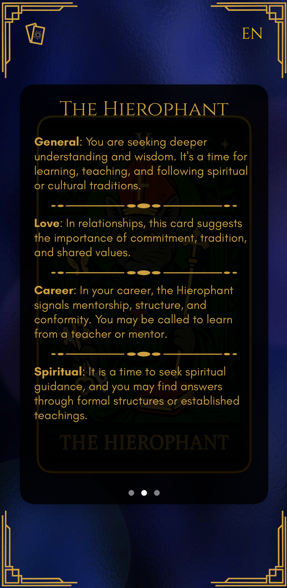

Features
Card of the Day
Each morning, receive a unique Tarot card drawn from a mystical deck. Discover its meaning, daily prediction, and a gentle prompt to guide your decisions. Perfect for setting intentions and enhancing mindfulness.

Full Deck Exploration
Unlock the complete 78-card Tarot deck at your fingertips. Browse Major and Minor Arcana cards, read comprehensive descriptions, and learn symbolism, history, and reversed interpretations to deepen your practice.

Detailed Contextual Analysis
Get tailored insights into Love, Career, and Spirituality based on your Card of the Day. Understand how the card’s energies affect relationships, professional growth, and inner development.